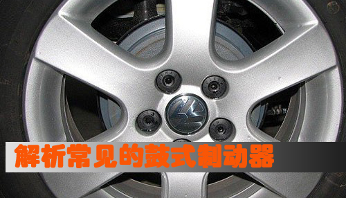

刹车制动很重要 解析常见的鼓式制动器
[汽车点评网 技术] 在日常车辆行驶的过程中，最为常用的一项动作就是刹车，为了避免前方的障碍物，或者下坡行驶中为了保持速度问题，都要需用到汽车的制动系统，而实现这一切的动作的核心部件就是制动器。我们最为常见的两种制动器为鼓式制动器和盘式制动器，今天我们主要来了解的就是其中一项——鼓式制动器。
原理：在踩下制动踏板时，推动制动总泵的活塞运动，进而在油路中产生压力，制动液将压力传递到车轮的制动轮缸推动活塞，活塞推动制动蹄向外运动，进而使得摩擦衬片与制动鼓发生摩擦，从而产生制动力。

鼓式制动器的旋转元件是制动鼓，固定元件是制动蹄，制动时制动蹄在促动装置作用下向外旋转，外表面的摩擦片压靠到制动鼓的内圆柱面上，对鼓产生制动摩擦力矩。凡对蹄端加力使蹄转动的装置统称为制动蹄促动装置，制动蹄促动装置有轮缸、凸轮和楔。
制动器根据动力辅助的方式不同，可以分为以下三种：以液压制动轮缸作为制动蹄促动装置的制动器称为轮缸式制动器；以凸轮作为促动装置的制动器称为凸轮式制动器；用楔作为促动装置的制动器称为楔式制动器。其中我们最为常见的制动器就是轮岗式制动器。下面就来介绍几种轮岗式制动器。
1、领从蹄式
其特点是两个制动蹄各有一个支点，一个蹄在轮缸促动力作用下张开时的旋转方向与制动鼓的旋转方向一致，称为领蹄；另一个蹄张开时的旋转方向与制动鼓的旋转方向相反，称为从蹄。
2、双领蹄和双向双领蹄式
汽车前进时两个制动蹄均为领蹄的制动器称为双领蹄式制动器。双领蹄式制动器的结构特点是，每一制动蹄都用一个单活塞制动轮缸促动，固定元件的结构布置是中心对称式。双向双从蹄式制动器使用了两个双活塞轮缸，无论汽车前进还是倒车，都是双领蹄式制动器，故称双向双领蹄式制动器
3、双从蹄式
汽车前进时两个制动蹄均为从蹄的制动器为双从蹄式制动器。
4、单向和双向自增力式
（1）单向自增力式制动器
其特点是两个制动蹄只有一个单活塞的制动轮缸，第二制动蹄的促动力来自第一制动蹄对顶杆的推力，两个制动蹄在汽车前进时均为领蹄，但倒车时能产生的制动力很小。
（2）双向自增力式制动器
其特点是两个制动蹄的上方有一个双活塞制动轮缸，轮缸的上方还有一个制动蹄支承销，两制动蹄的下方用顶杆相连。无论汽车前进还是倒车，都与自增力式制动器相当，故称双向自增力式制动器。
点评：
鼓式制动器有内张型和外束型两种，依靠的都是摩擦的原理，由于造价便宜，鼓式制动器的应用非常普遍，但是它有很多的缺点：制动力稳定性差，不易于掌控；由于散热性能差，在制动过程中会聚集大量的热量；制动块和轮鼓在高温影响下较易发生极为复杂的变形，容易产生制动衰退和振抖现象，引起制动效率下降，等等。而盘式制动器就能改善一部分缺点，在这之后我们将会为您奉上盘式制动器的介绍。（文/汽车点评网 张丹）